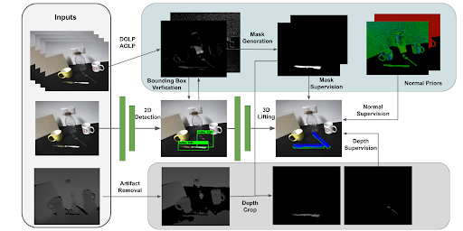

Research
My research interest is in the pose estimation of category-level objects and novel objects, which is important for robotic applications. Also
I am interested in vision-language-action models for generic robotic manipulations.
|
|
|
GS-Pose: Category-Level Object Pose Estimation via Geometric and Semantic Correspondence
Pengyuan Wang,
Takuya Ikeda,
Robert Lee,
Koichi Nishiwaki
ECCV, 2024
project page
/
code
/
arXiv
GS-Pose enables training category-level object pose estimations from only a few synthetic CAD models , and achieves comparable
results with baselines trained on real pose dataset.
|
|
|
HouseCat6D - A Large-Scale Multi-Modal Category Level 6D Object Perception
Dataset with Household Objects in Realistic Scenarios
HyunJun Jung,
Shun-Cheng Wu,
Patrick Ruhkamp,
Guangyao Zhai,
Hannah Schieber,
Giulia Rizzoli,
Pengyuan Wang,
Hongcheng Zhao,
Lorenzo Garattoni,
Sven Meier,
Daniel Roth,
Nassir Navab,
Benjamin Busam,
CVPR , 2024 (Highlight)
project page
/
dataset
/
arXiv
A large-scale category-level pose dataset with accurate ground truth pose annotations. The dataset features
photometrically-challenging categories including transparent and metallic objects, and more diverse object poses in
the real scenes. Feel free to test your pose estimation methods on our benchmark.
|
|
|
Improving Self-Supervised Learning of Transparent Category Poses
with Language Guidance and Implicit Physical Constraints
Pengyuan Wang,
Lorenzo Garattoni,
Sven Meier,
Nassir Navab
Benjamin Busam
RA-L, 2024
arXiv
We propose novel self-supervision losses to self-supervise the
category-level pose estimations for transparent objects. Only RGB-D with polarization
images and no real pose annotations are needed in the self-supervision stage.
|
|
|
CCD-3DR: Consistent Conditioning in Diffusion for Single-Image 3D
Reconstruction
Yan Di ,
Chenyangguang Zhang,
Pengyuan Wang,
Guangyao Zhai,
Ruida Zhang ,
Fabian Manhardt ,
Benjamin Busam,
Xiangyang Ji,
Federico Tombari
arXiv, 2023
arXiv
CCD-3DR works on generative networks imagining object point clouds from a single RGB
image. Accurate point clouds are generated by diffusion networks with consistent object center conditioning.
|
|

|
CroCPS: Addressing Photometric Challenges in Self-Supervised
Category-Level 6D Object Poses with Cross-Modal Learning
Pengyuan Wang,
Lorenzo Garattoni,
Sven Meier,
Nassir Navab,
Benjamin Busam
BMVC, 2022
paper
How to estimate the object pose of metallic objects from RGB-D inputs in presence of depth artifacts?
CroCPS proposes a multi-modal approach to improve pose estimation accuracy in real scenes for metallic category.
|
|
|
Polarimetric Pose Prediction
Daoyi Gao,
Yitong Li ,
Patrick Ruhkamp,
Iuliia Skobleva,
Magdalena Wysock,
HyunJun Jung,
Pengyuan Wang,
Arturo Guridi,
Benjamin Busam
ECCV, 2022
project page
/
paper
/
code
PPP-Net proposes a hybrid model that utilizes polarizaiotn information with physical priors in a data-driven learning
strategy to improve the accuracy of pose predictions for photometric challenging objects.
|
|
|
PhoCaL: A Multi-Modal Dataset for Category-Level Object Pose
Estimation with Photometrically Challenging Objects
Pengyuan Wang*,
HyunJun Jung*,
Yitong Li,
Siyuan Shen,
Rahul Parthasarathy Srikanth,
Lorenzo Garattoni,
Sven Meier,
Nassir Navab,
Benjamin Busam
CVPR, 2022
project page
/
dataset
/
arXiv
We propose a novel method to annotate object poses accurately with
a robot arm, especially we design a calibration pipeline for hand-eye calibration of the cameras.
Our method annotates the object poses accurately, even for photometrically-challenging
objects such as glasses and cutlery.
|
|
|
DemoGrasp: Few-Shot Learning for Robotic Grasping
with Human Demonstration
Pengyuan Wang*,
Fabian Manhardt*,
Luca Minciullo,
Lorenzo Garattoni,
Sven Meier,
Nassir Navab,
Benjamin Busam
IROS, 2021
arXiv
DemoGrasp proposes to learn robotic grasping from human demonstrations.
In the method we learn the grasping pose and object shape jointly in a
demonstration sequence. Afterwards we propose a novel object pose estimator
to get object poses in the real scenes as well as the grasping point.
|
|
|
Unofficial Implementation of CLIP Visual Prompting
Github Code
Visual prompting recognizes the keypoint positions in the images by specifying the keypoint names with CLIP. The method is achieved
by drawing circles around the keypoints. We unofficially implement the method with CLIP models and optimal transport functions, and provide
a testing example in github.
|
Feel free to steal this website's source code. Do not scrape the HTML from this page itself, as it includes analytics tags that you do not want on your own website — use the github code instead. Also, consider using Leonid Keselman's Jekyll fork of this page.
|
|
{kind=link}